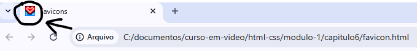

Favicon ou icone de favorito, é um icone do navegador que representa sua marca. A maioria das pessoas presta atenção aos icones que aparecem na guia ao lado do nome de uma empresa, mas tambem estão em páginas de resultados de busca, barras de ferramentas, listas de marcadores, barras de endereços e outras áreas na web
Na criação de sites o favicon é aquele pequeno icone que aparece ao lado da barra de endereços
